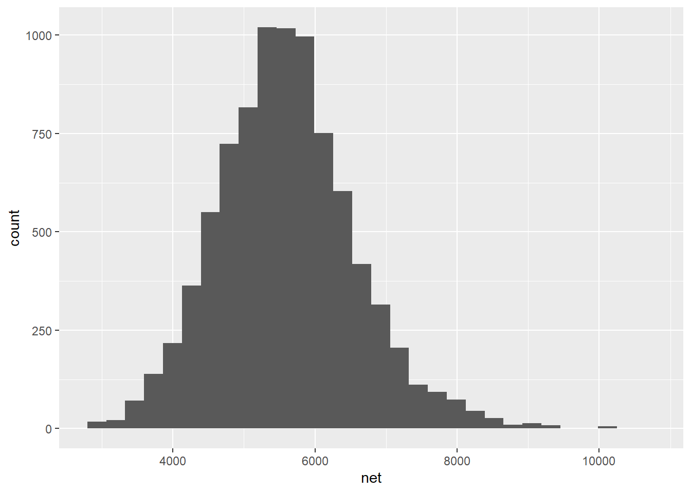
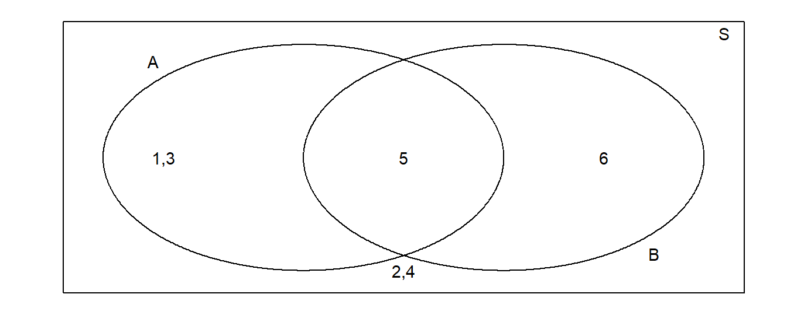
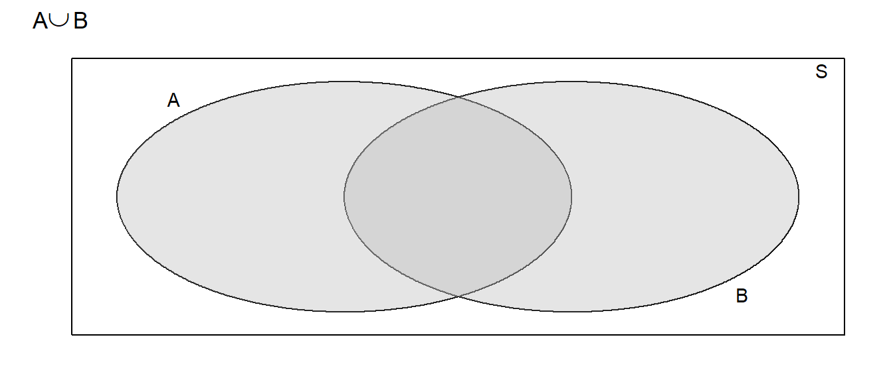
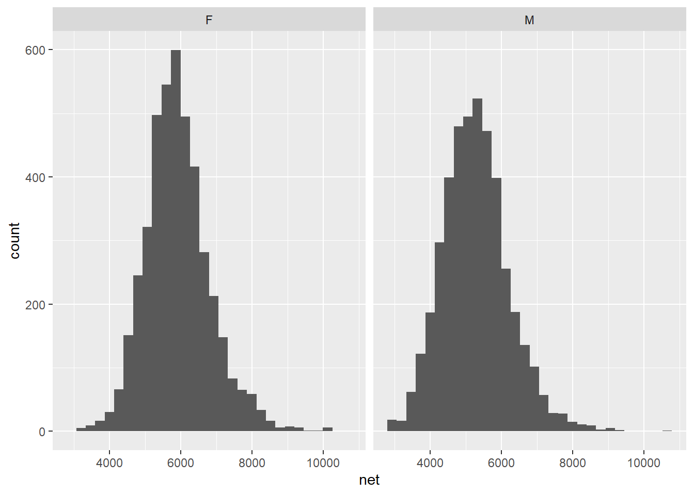
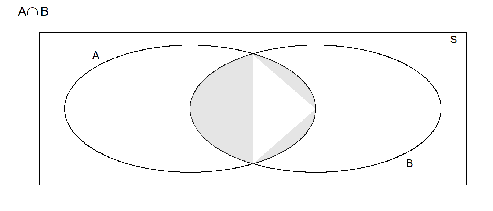
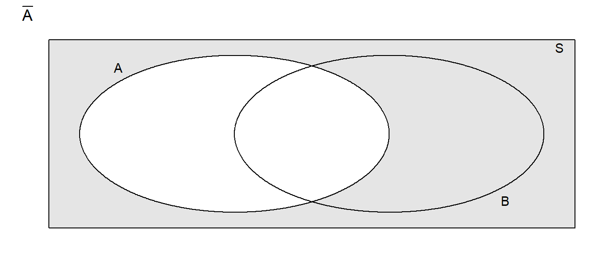
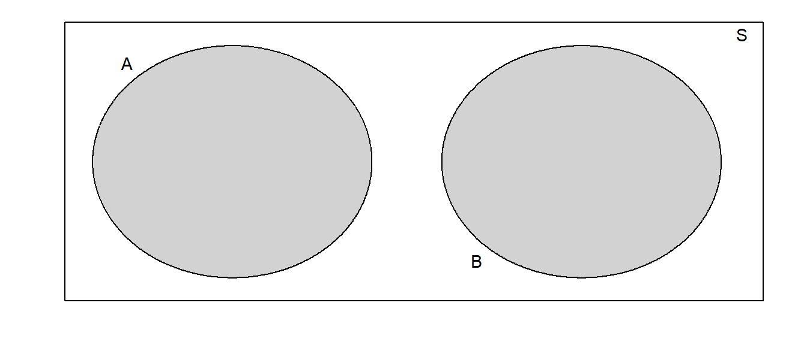
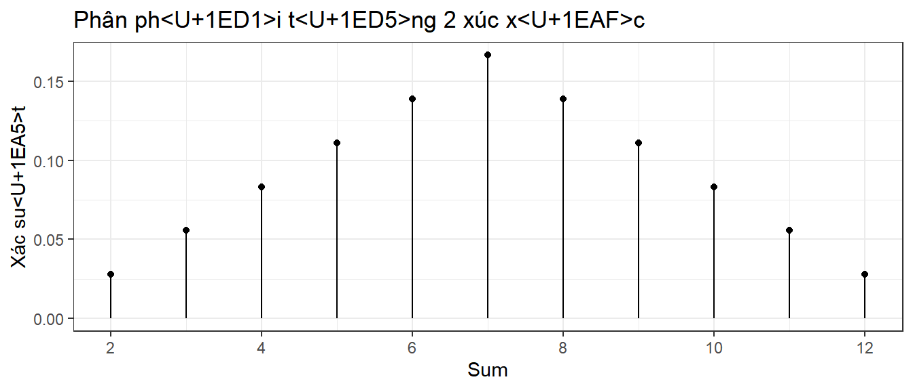

5 Xác suất cơ bản
5.1 Một số định nghĩa cơ bản
Probability: Likelihood, relative frequency, chance.
Outcome: Kết quả/biến số -> Là một quan sát (observation) của một thí nghiệm (experiment) ngẫu nhiên, ví dụ: một lần tung xúc xắc. Trong mục này ta sẽ giữ nguyên từ “outcome”.
Experiment: quá trình dẫn đến một hoặc nhiều outcome.
Sample space: Không gian mẫu -> tập hợp tất cả các outcome của thí nghiệm, còn được gọi là “universal set”. Từ này chúng ta sẽ cố gắng sử dụng tiếng Việt.
Event: Sự kiện -> là tập hợp các outcome với xác suất nhất định. Ví dụ: Lăn xúc xắc ra số nhỏ hơn 3.
Có 3 cách hiểu về xác suất: clasical, relative frequency và subjective.
5.2 Lý thuyết tập hợp
5.2.1 Biểu đồ Venn
Đặt \(S\) là tập hợp tất cả các outcome của thí nghiệm ngẫu nhiên (tức là sample space). Trong đó, chúng ta quan tâm đến hai sự kiện \(A\) và \(B\).
Sử dụng biểu đồ Venn để thể hiện các sự kiện, với thí nghiệm là lăn một lần xúc xắc có 6 mặt, tức là \(S = \{1,2,3,4,5,6\}\), với:
\(A\) là “lăn xúc xắc ra số lẻ”
\(B\) là “lăn xúc xắc ra lớn hơn 5”

5.3 Các phép toán/quan hệ tập hợp
5.3.1 Phép hợp (Union)
Phép hợp thể hiện hoặc A và B sẽ sảy ra (quan hệ either or), được ký hiệu là \(A\cup B\).

5.3.2 Phép giao (intersection)
Phép giao thể hiện sự kiện cả A và B cùng xảy ra (both), ký hiệu là \(A\cap B\).

5.3.3 Phần bù (Complement)
Phần bù tương đối, hay còn gọi là phép hiệu (difference), ký hiệu là \(A \setminus B\). Đây là tập hợp các phần tử có trong A nhưng không có trong B.
Phần bù tuyệt đối (absolute complement)
Phần bù tuyệt đối của tập hợp A để thể hiện sự kiện “A không xảy ra”, tương ứng với tất cả các outcome không thuộc A, có thể nằm trong một không gian mẫu toàn thể khác.

5.3.4 Loại trừ lẫn nhau (Mutually exclusive)
Quan hệ loại trừ lẫn nhau (hay còn gọi là xung khắc) - mutually exclusiveness/disjoint - ký hiệu là \(\bar{A}\) hoặc \(A^{C}\).
Định nghĩa 1. Hai sự kiện A và B được gọi là loại trừ lẫn nhau nếu sự xảy ra của sự kiện này ngăn việc xảy ra của sự kiện kia. Ví dụ: Trong 1 lần đổ xúc xắc, số 2 và số 5 không thể cùng xảy ra.
5.4 Quy luật xác suất
5.4.1 Các quy luật cơ bản
Trong phần này, ta sử dụng biểu đồ Venn, cụ thể là phần diện tích trong biểu đồ, để thể hiện xác suất của một sự kiện.
Định nghĩa 2. Xác suất là tỷ lệ số lần một sự kiện xảy ra trong nhiều lần thử lặp lại của một hiện tượng ngẫu nhiên. Nói một cách khác, xác suất chính là tần suất tương đối (relative frequency) về lâu dài.
Quy luật 1. Với bất kỳ sự kiện \(A\), xác suất \(P(A)\) luôn thỏa mãn \(0\le P(A) \le 1\) vì tỷ lệ luôn nằm trong khoảng \([0,1]\).
Quy luật 2. Nếu hai sự kiện loại trừ lẫn nhau, \(PA \cup B = P(A) + P(B)\).
Vì S là tập hợp tất cả các sự kiện có thể xảy ra, diện tích của hình chữ nhật bên ngoài biểu đồ sẽ là 1 và xác suất của sự kiện A được thể hiện bằng diện tích hình tròn A. Khi A và B loại trừ lẫn nhau, A và B là hai hình tròn tách biệt.

5.4.2 Xác suất có điều kiện (conditional probability)
Ở phần trước, chúng ta xem xét các mối quan hệ tập hợp, sử dụng để thể hiện sự liên quan của 2 sự kiện A và B. Tuy nhiên, với phép hợp hay phép giao, A và B không có mối quan hệ phụ thuộc.
Ở phần này, ta xem xét tiếp tình huống có từ hai sự kiện trở lên xảy ra, và một sự kiện diễn ra trước sự kiện còn lại, tức là trở thành điều kiện của sự kiện còn lại.
Xác suất của A xảy ra nếu B đã xảy ra được viết là \(P(A|B)\), còn có thể gọi là “xác suất của A với điều kiện B”.
Ví dụ 1: Để hình dung rõ ràng hơn về xác suất có điều kiện, ta xét một ví dụ cực kì đơn giản: Nếu tung hai đồng xu cùng một lúc, ta có 4 outcome là \(\{hh, ht, th, tt\}\) (h là head, t là tail). Như vậy xác suất tung cả hai đồng xu ra mặt ngửa là 25% (\(1/4\)).
Thay vì tung cùng một lúc, ta tung lần lượt. Nếu đồng xu thứ nhất ra mặt ngửa, thì xác suất để cả hai đều ngửa sau khi tung nốt đồng xu thứ hai là bao nhiêu?
Nếu nghĩ một cách đơn giản theo common sense, ta thấy nếu bây giờ chỉ còn một đồng xu để tung thì chỉ còn hai kết quả hoặc sấp hoặc ngửa. Vậy rõ ràng xác suất là 50%? Nếu để ý kỹ hơn, ta thấy không gian mẫu ban đầu bị thu nhỏ lại và chỉ còn hai khả năng xảy ra: \(\{hh, ht\}\), tức là \(P(H | H) = 1/2\).
Ví dụ 2: trò chơi roullette truyền thống có 37 ô, tất cả đều như nhau (xác suất như nhau = 1/37). Có 18 ô đỏ, 18 ô đen, kèm với 1 ô số 0. Trong số các ô đỏ có 8 ô số chẵn (và 10 lẻ); trong số các ô đen có 10 ô số sẵn (và 8 lẻ).
Tình huống: Nếu vòng roullette được xoay bí mật, và sau đó bạn được cho biết là kết quả rơi vào ô màu đỏ -> tính xác suất kết quả cũng là số lẻ?
Trước tiên cần định nghĩa 2 sự kiện A và B:
Sự kiện A: kết quả ra là ô màu đỏ
Sự kiện B: kết quả ra là số lẻ
Hai sự kiện này có mối quan hệ là: A xảy ra trước, và xác suất của B phụ thuộc vào A. Tức là sẽ khác với việc A và B xảy ra cùng lúc (intersection). Với tình huống xác suất có điều kiện như thế này, không gian mẫu của B sẽ phụ thuộc vào A, và không còn là không gian mẫu ban đầu nữa (37 ô).
Nếu kết quả là một ô màu đỏ, và có 10 trong số 18 ô đỏ là số lẻ, thì \(P(odd|red) = 10/18 = 5/9\). Có thể thấy tử số là 18, thay vì là 37, vì ta đang xét trên không gian mẫu nhỏ hơn là tập các ô có màu đỏ.
So sánh với 2 trường hợp:
\(P(odd) = 18/37\), tức là không gian mẫu có 37 outcome.
\(P(odd giao red) = 10/37\), tức là không gian mẫu vẫn có 37 outcome. Trường hợp này, có thể hiểu là ta tính xác suất của sự kiện kết quả xảy ra vừa có màu đỏ, vừa là số lẻ, mà không có điều kiện nào đi trước.
Ví dụ 3: Chúng ta xét tiếp một ví dụ tương tự, nhưng sử dụng một bảng xác suất để dễ hình dung hơn:
| \(\,\) | Fire | Auto | Other |
|---|---|---|---|
| Fraudulant | 6% | 1% | 3% |
| non-Fraudulant | 14% | 29% | 47% |
Trên đây là dữ liệu về các case đòi bồi thường bảo hiểm và tỷ lệ lừa đảo, lấy từ sách “An Introduction to Statistical Methods & Data Analysis” (Ott & Longnecker). Ví dụ trên với vòng xoay roullette có không gian mẫu toàn thể là \(P(Color \cap Parity)\) (màu sắc giao với tính chẵn lẻ). Ở ví dụ này, dữ liệu chính là \(P(Category \cap PolicyType)\).
Cộng dồn các cột và các hàng, ta tìm ra được xác suất của từng hạng mục (category) và từng loại hợp đồng bảo hiểm (policy).
| \(\,\) | Fire | Auto | Other | \(\,\) |
|---|---|---|---|---|
| Fraudulant | 6% | 1% | 3% | 10% |
| non-Fraudulant | 14% | 29% | 47% | 90% |
| \(\,\) | 20% | 30% | 50% | 100% |
Có thể thấy các case đòi bổi thường do cháy nổ dễ có khả năng lừa đảo hơn các case loại khác. Ta tính được tỷ lệ số case lừa đảo liên quan đến cháy nổ là:
\[\begin{aligned} P(\textrm{ Fraud }|\textrm{ FirePolicy }) &= \frac{\textrm{proportion of claims that are fire policies and are fraudulent}}{\textrm{proportion of fire claims}} \\ &= \frac{6\%}{20\%}\\ & \\ &= 0.3 \end{aligned}\]
Như vậy, có thể định nghĩa xác suất có điều kiện (với giả thiết \(P(B) \ne 0\)) là:
\[P(A|B)=\frac{P(A\cap B)}{P(B)}\]
Công thức trên có thể viết lại thành:
\[\begin{aligned} P(A\cap B) &= P(A\,|\,B)\,P(B) \\ &= P(B\,|\,A)\,P(A) \end{aligned}\]
Vì thứ tự không quan trọng và \(P\left(A\cap B\right)=P\left(B\cap A\right)\).
Sử dụng quy luật này, ta tính được xác suất một case đòi bổi thường là hợp đồng Auto với điều kiện case này không lừa đảo:
\[\begin{aligned} P\left(\,Auto\;|\;NotFraud\,\right) &= \frac{P\left(\,Auto\;\cap\;NotFraud\right)}{P\left(\,NotFraud\,\right)} \\ &= \frac{0.29}{0.9} \\ & \\ &= 0.3\bar{2} \end{aligned}\]
Ví dụ 4: Giả sử bạn là một nhà nghiên cứu thị trường về điện thoại, và bạn thu thập được dử liệu (giả định, không phải dữ liệu thật) với các thông tin về hãng (Apple vs Samsung) và giới tính người dùng (nam vs nữ).
Trong dữ liệu, điện thoại Apple chiếm 40% thị phần. Điều này có nghĩa là \(P(Apple) = 0.40\). Trong số điện thoại Apple, số người sử dụng là nam chỉ chiếm 35%, tức là \(P(Men|Apple) = 0.35\). Tuy nhiên, trong số người dùng Samsung, số lượng nam lại nhiều hơn, vì vậy \(P(Men|Samsung) = 0.60\).
Với các thông tin trên, ta có bảng sau:
| \(\,\) | Samsung | Apple | \(\,\) |
|---|---|---|---|
| Nam | |||
| Nữ | |||
| \(\,\) | 60% | 40% | 100% |
Có thể điền thêm các thông tin còn thiếu trong bảng bằng cách sử dụng định nghĩa xác suất có điều kiện. Ví dụ:
\[\begin{aligned} P\left(Men\,\cap\,Samsung\right) &= P\left(Men\,|\,Samsung\right)\,P\left(Samsung\right) \\ &= 0.60*0.60 \\ &= 0.36 \end{aligned}\]
Như vậy số lượng điện thoại là Samsung có người dùng nam là 0.36%. Tương tự, ta tính được:
\[\begin{aligned} P\left(Men\,\cap\,Apple\right) &= P\left(Men\,|\,Apple\right)\,P\left(Apple\right) \\ &= 0.35*0.40 \\ &= 0.14 \end{aligned}\]
Từ đó, có bảng hoàn chỉnh như sau:
| \(\,\) | Samsung | Apple | \(\,\) |
|---|---|---|---|
| Nam | 36% | 14% | 50% |
| Nữ | 24% | 26% | 50% |
| \(\,\) | 60% | 40% | 100% |
Tóm lại, các con số 36% hay 14% là được dựa trên không gian dữ liệu toàn thể, bao gồm toàn bộ số lượng điện thoại được sử dụng trong phân tích. Nếu chúng ta giới hạn không gian này trong số điện thoại Samsung hay Apple, các con số trên sẽ thay đổi (thành 60% và 35%).
5.4.2.1 Tính độc lâp
Hai sự kiện ngoài quan hệ phụ thuộc vào nhau còn có thể độc lập hoàn toàn với nhau. Ta có định nghĩa:
Định nghĩa 3. Hai sự kiện A và B được coi là độc lập nếu \(P(A|B) = P(A)\) và \(P(B|A) = P(B)\).
Hiểu theo cách khác, việc biết các outcome của sự kiện A không cho ta thông tin gì về các coutcome của sự kiện B, tức là xác suất của A giữ nguyên cho dù B có xảy ra hay không. Với phương pháp lấy mẫu ngẫu nhiên cơ bản (random sampling), ta thường giả định rằng hai biến bất kỳ luôn độc lập.
Quy luật 3.. Nếu A và B là hai sự kiện độc lập, thì \(P(A /cap B) = P(A|B)P(B) = P(A)P(B)\).
5.4.3 Tổng hợp quy luật xác suất
\[0 \le P\left(A\right) \le 1\]
\[P\left(A\right)+P\left(\bar{A}\right)=1\] \[P\left(A\cup B\right) = P\left(A\right)+P\left(B\right)-P\left(A\cap B\right)\] \[P\left(A\cap B\right) = \begin{cases} P\left(A\,|\,B\right)P\left(B\right)\\ P\left(B\,|\,A\right)P\left(A\right)\\ P(A)P(B)\;\; & \textrm{ nếu A, B độc lập} \end{cases}\]
\[P\left(A\,|\,B\right) = \frac{P\left(A\cap B\right)}{P\left(B\right)}\]
5.5 Biến ngẫu nhiên rời rạc
Trong thực tế, lý thuyết xác suất được sử dụng để tính toán khả năng xảy ra của nhiều loại sự kiện khác nhau, bao gồm các sự kiện mang tính định lượng (quantitative) và định tính (qualitative).
Ví dụ: với các sự kiện mà kết quả thu về không đo đếm được, dữ liệu có thể là các câu trả lời “Đồng ý” hoặc “Không đồng ý” thu được từ một bản survey, và được xếp loại vào một biến định tính. Mặt khác, các dữ liệu về thời gian, trọng lượng, etc. thường được xếp loại vào một biến định lượng. Chúng ta có thể đưa ra định nghĩa về hai loại biến ngẫu nhiên này:
Biến ngẫu nhiên liên tục (random continuous variable - biến định lượng): là biến bao gốm các giá trị có dạng số (numeric) và, trên lý thuyết, có thể nhận một số lượng giá trị không đếm được. Nói cách khác, nêu giá trị số có thể diễn đạt hoặc biến đổi theo kiểu số thập phân hoặc phân số, giá trị này thường là kiểu liên tục. Trong R, dữ liệu liên tục thường là kiểu numeric.
Biến ngẫu nhiên rời rạc (random discrete variable - định tính): là biến nhận một tập hợp các giá trị có thể đếm được. Nói cách khác, nếu việc diễn đạt giá trị ở dạng phân số hoặc thập phân trở nên vô nghĩa, giá trị thường sẽ là kiểu rời rạc. Nêu các quan sát của một biến biến định lượng chỉ có thể nhận một số các giá trị nhất định, biến này cũng được coi lả rời rạc. Trong R, dữ liệu rời rạc thường là kiểu factor hoặc string.
5.5.1 Giới thiệu về biến ngẫu nhiên rời rạc (NNRR)
Các quy luật sau áp dụng với biến NNRR:
- Xác suất của mỗi giá trị nằm giữa khoảng 0 và 1
- Tổng xác suất của tất cả các giá trị bằng 1
- Xác xuất của các biến NNRR có thể cộng với nhau, tức là \(P(3 \ hoặc \ 4) = P(3) + P(4)\)
5.5.1.1 Giá trị kỳ vọng
Ví dụ: Xét biến NNRR \(S\) là tổng kết quả của sự kiện thả 2 xúc xắc.
Ta có biểu đồ thể hiện xác suất của các giá trị mà \(S\) CÓ THỂ NHẬN:

Xác suất thường được áp dụng để đưa ra các phỏng đoán về tương lai, và một khái niệm cơ bản được xử dụng là giá trị kỳ vọng (expected value)
Trong trường hợp tung xúc xắc, ta có giá trị kỳ vọng \(E[S]\) chính là mean của tập hợp \(D\) gồm tất cả các giá trị mà \(S\) có thể nhận.
Ta biết trước được mọi giá trị mà \(S\) có thể nhận vì tập hợp này không lớn và dễ dàng suy ra được. Trong thực tế, việc có toàn bộ population là hiếm khi xảy ra, nên ta thường lấy một sample rất lớn và tìm giá trị kỳ vọng bằng cách tính sample mean, hay nói cách khác là weighted average của các giá trị có thể nhận được, với trọng số là xác suất (hay frequency) của từng giá trị.
\[\mu=E[S] = \sum_{\textrm{possible }s}\;s\cdot P\left(S=s\right)\]
Trong ví dụ trên, ta có:
\[\begin{aligned} \mu = E[S] &= \sum_{s=2}^{12}s\cdot P(S=s) \\ &= 2\cdot P\left(S=2\right)+3\cdot P\left(S=3\right)+\dots+11\cdot P\left(S=11\right)+12\cdot P\left(S=12\right) \\ &= 2\left(\frac{1}{36}\right)+3\left(\frac{2}{36}\right)+\dots+11\left(\frac{2}{36}\right)+12\left(\frac{1}{36}\right) \\ &= 7 \end{aligned}\]
Sau khi đã biết \(E[S]\) trong ví dụ trên, ta tiếp tục thí nghiệm bằng cách tung 2 xúc sắc 100 lần:
## [1] 7.14Có thể thấy trong thí nghiệm này, giá trị trung bình không bằng với \(E[S]\). Nếu lặp lại thí nghiệm này với số lần \(n\) lớn hơn thì khi \(n\) tiến tới vô hạn, giá trị trung bình sẽ tiến tới giá trị kỳ vọng.
5.5.1.2 Phương sai
Tương tự, ta định nghĩa phương sai (variance) của S (ký hiệu là \(\sigma^{2}\)) là weighted average của bình phương độ lệch chuẩn (squared-deviation) có thể xảy ra:
\[ \sigma^{2}=V[S] = \sum_{\textrm{possible }s}\; (s-\mu)^2 \cdot P\left(S=s\right)\]
Trong ví dụ trên, \(\sigma^{2}\) bằng:
\[\begin{aligned} \sigma^{2}=V[S] &= \sum_{s=2}^{12}\left(s-\mu\right)^{2}P(S=s) \\ &= (2-7)^{2}\left(\frac{1}{36}\right)+(3-7)^{2}\left(\frac{2}{36}\right)+\dots+(12-7)^{2}\left(\frac{1}{36}\right) \\ &= \frac{35}{6}=5.8\bar{3} \end{aligned}\]
Phương sai và giá trị kỳ vọng là 2 đại lượng quan trọng để định nghĩa và miêu tả một phân phối xác suất. (???)
5.6 Các phân phối rời rạc phổ biến
5.6.1 Binomial distribution - PP nhị thức
5.6.1.1 Định nghĩa
Ví dụ: Giả sử có ba chiếc bẫy được đặt tại ba vị trí trong rừng. Ba vị trí này xa nhau đủ để không ảnh hưởng đến xác suất của các bẫy khác bắt được thú.
Ta có:
- Sự kiện bẫy bắt được thú là \(C_i\)
- Sự kiện bẫy trống là \(E_i\)
- Xác suất bẫy bắt được thú là \(\pi = 0.8\)
Các kết quả có thể nhận được là:
| Outcome | \(\,\) |
|---|---|
| \(E_1, E_2, E_3\) | \(\,\) |
| \(C_1, E_2, E_3\) | \(\,\) |
| \(E_1, C_2, E_3\) | \(\,\) |
| \(E_1, E_2, C_3\) | \(\,\) |
| \(C_1, C_2, E_3\) | \(\,\) |
| \(C_1, E_2, C_3\) | \(\,\) |
| \(E_1, C_2, C_3\) | \(\,\) |
| \(C_1, C_2, C_3\) | \(\,\) |
Vì các bẫy ở xa nhau nên kết quả của từng bẫy là độc lập với nhau. Ta có:
\[ P(E_1 \cap E_2 \cap E_3) = P(E_1)P(E_2)P(E_3) = (1 - 0.8)0.8(1-0.8) = 0.032\]
Tương tự, ta tính được xác suất của các kết quả còn lại trong bảng:
| Outcome | Probability | \(S\) Outcome | Probability |
|---|---|---|---|
| \(E_1, E_2, E_3\) | 0.008 | \(S=0\) | 0.008 |
| ——————- | ————— | ————- | ————— |
| \(C_1, E_2, E_3\) | 0.032 | ||
| \(E_1, C_2, E_3\) | 0.032 | \(S=1\) | \(3(0.032) = 0.096\) |
| \(E_1, E_2, C_3\) | 0.032 | ||
| ——————- | ————— | ————- | ————— |
| \(C_1, C_2, E_3\) | 0.128 | ||
| \(C_1, E_2, C_3\) | 0.128 | \(S=2\) | \(3(0.128) = 0.384\) |
| \(E_1, C_2, C_3\) | 0.128 | ||
| ——————- | ————— | ————- | ————— |
| \(C_1, C_2, C_3\) | 0.512 | \(S=3\) | \(0.512\) |
Tiếp đó, ta xét đến biến ngẫu nhiên \(S\) và tổng hợp được xác suất của các giá trị mà \(S\) nhận được, tương đương với số bẫy bắt được mồi:
| \(S\) Outcome | Probability |
|---|---|
| \(S=0\) | \(0.008=0.2^3\cdot0.8^0\) |
| \(S=1\) | \(0.096=3\cdot0.2^2\cdot0.8^1\) |
| \(S=2\) | \(0.384=3\cdot0.2\cdot0.8^2\) |
| \(S=3\) | \(0.512=0.2^0\cdot0.8^3\) |
Do các sự kiện có tính độc lập với nhau nên tổng xác suất của mọi sự kiện bằng \(0.008 + 0.096 + 0.384 + 0.512 = 1\). Đồng thời, ta cũng nhận thấy rằng:
- Ở mỗi bẫy, xác suất để bẫy có bất kỳ outcome nào là \(\pi + 1 - \pi = 1\)
- Do có 3 bẫy, nên tổng xác suất là: \[\begin{aligned} (\pi + (1-\pi))^3 &= \pi^3 + 3\pi(1-\pi)^2 + 3\pi^2(1-\pi) + (1-\pi)^3 \\ &= 1 \end{aligned}\]
Tức là trong trường hợp tổng quát với \(n\) lần thử, ta sử dụng định lý nhị thức, trong đó mỗi phần tử tương đương với xác suất mà biến \(S\) nhận giá trị \(k\) - \(P(S=k)\):
\[\begin{aligned} (\pi + (1-\pi))^n &= {n \choose 0}\pi^n + {n \choose 1}\pi^{n-1}(1-\pi)^1 + ... + {n \choose n-1}\pi^1(1-\pi)^{n-1} + (1-\pi)^n \\ &= \sum_{k=0}^{n}{n \choose k}\pi^{k}(1-\pi)^{n-k} \end{aligned}\]
Như vậy, để tính \(P(S=k)\), ta chỉ cần sử dụng công thức (hay còn gọi là hàm khối xác suất - probability mass function - pmf) sau:
\[P(S=k)=\underbrace{\frac{n!}{x!(n-k)!}}_{hệ\ số\ nhị\ thức}\;\underbrace{\pi^{x}}_{k\,thành\ công}\;\underbrace{(1-\pi)^{n-x}}_{n-k\,thất\ bại}\]
Hệ số nhị thức chính là số tổ hợp chập \(k\) của \(n\) phần tử, có thể hiểu là: có \(\frac{n!}{x!(n-k)!}\) cách phân phối \(k\) lần thành công và \(n-k\) lần thất bại trong \(n\) lần thử.
Như vậy, phân phối nhị thức là phân phối đáp ứng các điều kiện sau:
- Thí nghiệm bao gồm \(n\) lần thử giống nhau
- Mỗi lần thử có thể có 2 kết quả: thành công hoặc thất bại/đúng hoặc sai.
- Xác suất thành công trong mỗi phép thử là \(\pi\) là giữ nguyên giữa các phép thử
- Các phép thử có tính độc lâp với nhau
- Tồn tại một biến ngẫu nhiên \(S\) là số lần thành công trong \(n\) phép thử
Trong R, ta sử dụng hàm dbinom để mô phỏng lại phân phối nhị thức:
dist <- data.frame(x=0:3) %>%
mutate(xs=dbinom(x,size=3,prob=0.8))
ggplot(dist, aes(x=x)) +
geom_point(aes(y=xs)) +
geom_linerange(aes(ymax=xs, ymin=0)) +
ggtitle('phân phối nhị phân: n=3, p=0.8') +
theme_bw()
Trong đồ thị trên, để tính chiều cao các đường tần suất, ta sử dụng hàm pmf tại điểm tương ứng.
\[\begin{aligned} P(S=2) &= {3 \choose 2} (0.8)^2(1-0.8)^{3-2} \\ &=\frac{3!}{2!(3-2)!}(0.8)^2(0.2)^{3-2} \\ &= 0.384 \end{aligned}\]
Trong R, với mỗi phân phối xác suất, thường sẽ có 4 nhóm function với vai trò khác nhau:
- Nhóm d-function: Tính chiều cao của hàm pmf (hoặc pdf). Với biến NNRR \(Y\), d-function trả về kết quả tương đương với \(P(Y=y)\) với \(y\) bất kỳ.
- Nhóm p-function: Tính \(P(Y\le y)\), tức là xác suất để \(Y\) nhận giá trị nhỏ hơn hoặc bằng \(y\).
- Nhóm q-function: Tìm quantile nhất định của phân phối. Ví dụ, giá trị nào chia phân phối tại các ngưỡng 25% và 75%?
- Nhóm r-function: Lấy một sample ngẫu nhiên từ phân phối.
Trong hân phối nhị thức, 4 hàm tương ứng là dbinom, pbinom, qbinom và rbinom.
5.6.1.2 Giá trị kỳ vọng của phân phối nhị thức
Xét ví dụ đơn giản sau: Nêu tung 100 đồng xu, với \(X\) là số lần ra mặt ngửa (head), ta có \(E[X] = 50 = \frac{1}{2}100\)
Hoặc: Một bài kiểm tra có 20 câu hỏi, mỗi câu 4 đáp án. Nếu chọn ngẫu nhiên cho cả 20 câu, số câu đúng kỳ vọng là \(\frac{1}{4}20 = 5\).
Tóm lại, có thể thấy với phân phối nhị thức, \(E[X]=n\pi\). Ta chứng minh công thức này như sau:
Ở phần trước, ta có với một phân phối xác suất nói chung, \(E[X]\) là mean của 1 sample đủ lớn, tức là \(E[X] = \sum\;x\cdot P\left(X=x\right)\).
Suy ra với phân phối nhị thức:
\[\begin{aligned} E[X] &= x \cdot P\left(X=x\right) \\ &=\sum_{x=0}^{n}x{n \choose x}\pi^x(1-\pi)^{n-x} \\ \end{aligned}\]
Khi \(x=0\), phần tử đầu tiên trong tổng cũng bằng 0 nên:
\[\begin{aligned} E[X] &= x \cdot P\left(X=x\right) \\ &=\sum_{x=0}^{n}x{n \choose x}\pi^x(1-\pi)^{n-x} \\ &=\sum_{x=1}^{n}x{n \choose x}\pi^x(1-\pi)^{n-x} \\ &=\sum_{x=1}^{n}x\frac{n!}{x!(n-x)!}\pi^x(1-\pi)^{n-x} \\ &=\sum_{x=1}^{n}n\frac{(n-1)!}{(x-1)!((n-1)-(x-1))!}\pi^x(1-\pi)^{n-x} \\ &=n\pi\sum_{x=1}^{n}{n-1 \choose x-1}\pi^{x-1}(1-\pi)^{(n-1)-(x-1)} \\ \end{aligned}\]
Áp dụng định lý nhị thức:
\[\begin{aligned} E[X] &= \vdots \\ &=n\pi(\pi+(1-\pi))^{n-1} \\ &=n\pi \cdot 1^{n-1} \\ &=n\pi \end{aligned}\]
Tương tự, phương sai được tính bằng:
\[\begin{aligned} V[X] &= \sum_{x=0}^{n}\left(x-E\left[X\right]\right)^{2}\,P\left(X=x|n,\pi\right) \\ &= \sum_{x=0}^{n}\left(x-E\left[X\right]\right)^{2}\;\frac{n!}{x!\left(n-x\right)!}\pi^{x}\left(1-\pi\right)^{n-x} \\ &= \vdots \\ &= n\pi(1-\pi) \end{aligned}\]
5.6.2 Poisson distribution - PP Poisson
Phân phối Poisson được tạo ra với mục đích mô hình hóa số lượng sự kiện diễn ra trong một khoảng thời gian nhất định, hay mở rộng ra là trong một giới hạn cố định. Ví dụ:
- Số lượng khách hàng thanh toán mỗi tiếng
- số lượng hươu trên mỗi 1000 hecta
- số lượng búi tảo trong mỗi mét khối nước hồ
Các dữ kiện trên là một kiểu tốc độ/tần suất thay đổi, trong PP Poisson ký hiệu là \(\lambda\).
Sử dụng phân phối Poisson, ta có thể dự đoán được xác suất mà số lượng sự kiện nào đó có thể xảy ra trong một giới hạn cố định.
5.6.2.1 So sánh với PP nhị thức
Các ví dụ liệt kê ở trên có thể giải quyết được bằng cách sử dụng PP nhị thức, do ta đang tính xác suất xảy ra số sự kiện thành công (KH có thanh toán, hươu có tồn tại, etc.), gọi là \(P(X)\).
Tuy nhiên, cần nhiều thông tin hơn để tính \(P(X)\), bao gồm xác suất thành công \(\pi\) và tổng số lần thử \(n\). Trong khi đó, đề bài đưa ra lại chỉ có \(\lambda\) là dữ kiện ở dạng tỷ lệ tăng/tốc độ: số KH thanh toán/tiếng, số hươu/hecta, etc, hay nói cách khác chính là giá trị kỳ vọng \(E[X]\).
Như vậy, thách thức đầu tiên gặp phải là PP nhị thức cần nhiều dữ kiện hơn, trong khi Poisson chỉ cần 1 thông tin duy nhất.
Tiếp đó, ta nhận thấy nếu tính được xác suất thành công trên mỗi đơn vị thời gian hoặc không gian, ta gặp phải vấn đề là PP nhị thức không chứa được NHIỀU HƠN MỘT sự kiện trong một đơn vị thời gian/không gian tương ứng.
Có thể giải quyết vấn đề này bằng cách chia nhỏ đơn vị thời gian/không gian ra, ví dụ chia 1 tiếng thành 60 phút, hoặc thậm chí nhỏ hơn. Tuy nhiên, kết quả đưa ra sẽ luôn gặp giới hạn trong việc fit với dữ liệu thực tế.
5.6.2.2 Định nghĩa & chứng minh PP Poisson
Từ ví dụ trên, có thể thấy về mặt toán học, \(n \to \infty\), do càng chia nhỏ đại lượng thời gian/không gian, số sự kiện chứa được trong mỗi đơn vị càng tăng.
Vì \(E[X]\) cố định nên \(p \to 0\), do \(E[X]= \lambda = np\).
Như vậy, ta có thể suy ra công thức tính pmf của PP Poisson từ pmf của PP nhị thức như sau:
\[\begin{aligned} P(Y=k) &=\lim_{n\to\infty}{n \choose k} \pi^k (1-\pi)^{n-k} \\ &=\lim_{n\to\infty}{n \choose k} \left(\frac{\lambda}{n} \right)^k \left(1-\frac{\lambda}{n} \right)^{n-k} \\ &=\lim_{n\to\infty} \frac{n!}{(n-k)!k!} \frac{1}{n^k} \lambda^k \left(1-\frac{\lambda}{n}\right)^n \left(1-\frac{\lambda}{n}\right)^{-k} \\ &= \lim_{n\to\infty} \underbrace{\frac{n!}{(n-k)!} \frac{1}{n^k}}_{=1} \; \underbrace{\frac{\lambda^k}{k!} \left(1-\frac{\lambda}{n}\right)^n}_{Poisson\ PMF} \; \underbrace{\left(1-\frac{\lambda}{n}\right)^{-k}}_{=1} \\ &= \underbrace{\frac{\lambda^k}{k!} \; e^{-\lambda}}_{Poisson\ PMF} \end{aligned}\]
Phần chứng minh cụ thể cho từng thừa số nằm ở phụ lục cuối chương.
Như vậy ta có: Với biến ngẫu nhiên \(Y\) nhận giá trị \(y\) là số sự kiện thành công trong một đơn vị thời gian/không gian nào đó, hay nói cách khác là hàm khối xác suất pmf là:
\[\underbrace{\frac{\lambda^k}{k!} \; e^{-\lambda}}_{Poisson\ PMF}\]
với \(\lambda\) là số sự kiện kỳ vọng xảy ra trong một đơn vị thời gian/không gian và \(e\) là \(2.718281828\dots\) (base of natural logarithm). Từ đó, ta suy ra:
\[E[Y] = \lambda\] \[Var[Y] = \lambda\]
Ví dụ: Có \(Y\) là số khách hàng thanh toán tại quầy của 1 cửa hàng tạp hóa trong vòng 12 tiếng. Giả sử \(Y\sim Poi(\lambda=2.3)\). Hỏi:
- Xác suất có 4 KH thanh toán trong 12 tiếng?
\[P(Y=4) = \frac{2.3^4e^{-2.3}}{4!} = 0.1169\]
- Xác suất có nhiều nhất 4 KH?
\[\begin{aligned} P(Y\le4) &= P(Y=0)+P(Y=1)+P(Y=2)+P(Y=3)+P(Y=4) \\ &= 0.1003+0.2306+0.2652+0.2033+0.1169 \\ &= 0.9163 \end{aligned}\]
- Xác suất có nhiều hơn hoặc bằng 5 KH?
\[P(Y\ge5)=1-P(Y\le4) =1-0.9163 =0.0837\]
Các phép tính trên có thể thực hiện trên R với 4 nhóm hàm tương tự như PP nhị thức:
dist <- data.frame( NumCaught = 0:10 ) %>%
mutate( probability = dpois( NumCaught, lambda=2.3 ) )
ggplot(dist, aes(x=NumCaught)) +
geom_point( aes(y=probability) ) +
geom_linerange(aes( ymax=probability, ymin=0)) +
ggtitle(expression(paste('Poisson Distribution with ', lambda == 2.3))) +
labs(x='Number Caught') +
theme_bw() 
## [1] 0.1169022## [1] 0.9162493## [1] 0.083750725.7 Biến ngẫu nhiên liên tục
Biến ngẫu nhiên liên tục (NNLT) có thể nhận số lượng vô hạn giá trị, dẫn đến nhiều sự khác biệt về toán học kahs hóc búa so với biến NNRR.
Cụ thể, xác suất để biến NNLT \(X\) nhận giá trị \(x\) bằng 0, vì vậy chúng ta sẽ tìm xác suất biến \(X\) rơi vào một khoảng nhất định. Vì thế, thay vì lấy tổng xác suất, ta sẽ lấy tích phân.
Do tài liệu này không chuyên sâu về toán nên thay vào đó ta ưu tiên sử dụng R để tính hơn, nhưng vẫn sẽ đi sâu vào 1 số công thức toán cần thiết để hiểu sâu về bản chất.
5.7.1 PDF, CDF và CCDF
5.7.1.1 PDF - Hàm mật độ xác suất
Với các PP liên tục, ta sử dụng PDF (probability density function) thay vì PMF (probability mass function - hàm khối xác suất).
PMF là hàm để tính xác suất của một biến ngẫu nhiên \(X\) nhận giá trị \(x\), tức là \(P(X=x)\). Đồng thời, tổng xác suất của mọi \(x\) mà \(X\) có thể nhận bằng 1.
Khi biểu diễn trên đồ thị, ta thấy xác suất của mỗi tương ứng với mỗi giá trị \(x\) của biến NNRR \(X\) chính là chiều cao của của các bar.
Tuy nhiên, với biến NNLT, do không thể tìm được xác suất của 1 giá trị \(x\) cụ thể, ta sẽ quan tâm tới phần diện tích bên dưới đồ thị, cụ thể là ở giữa một khoảng 2 giá trị \([a,b]\) nào đó, tương đương với xác suất mà biến \(X\) nhận giá trị trong khoảng này.
Cũng cần lưu ý rằng, xác suất mà biến \(X\) nhận giá trị trong khoảng \([a,b]\) không sử dụng hàm PDF để tính. Hàm PDF chỉ dùng để biểu diễn mật độ xác suất.
5.7.1.2 CDF - Hàm phân phối tích luỹ
Coi \(f(x)\) là một hàm PDF và \(F(x)\) là CDF tương ứng. Hàm \(f(x)\) có thể nhận giá trị bất kỳ từ 0 đến \(\infty\), với điều kiện phần diện tích dưới \(f(x)\) bằng 1, i.e. tích phân của \(f(x)\) bằng 1, hay \(\int_{-\infty}^{x} f(t) dt = 1\).
Khi muốn tìm xác suất từ hàm PDF, ta phải lấy tích phân của \(f(x)\) giữa 2 giá trị \(a\) và \(b\). Nếu giá trị bên trái, tức là \(a = -\infty\), ta có CDF chính là \(P(X \leq b)\).
Ngược lại với CDF, ta còn quan tâm đến CCDF (complementary CDF) để tìm \(P(X>b)\), hay chính là \(1-P(X \leq b) = 1 - CDF\)
5.8 Các phân phối liên tục phổ biến
5.8.1 Exponential distribution - PP mũ
PP mũ được sử dụng để mô hình hóa và dự đoán khoảng thời gian giữa 2 sự kiện liên tục, i.e. thời gian chờ đến sự kiện tiếp theo. Ví dụ:
- thời gian đến khi KH tiếp theo thanh toán
- thời gian chờ giữa 2 lần đón của xe buýt
Tự định nghĩa này, có thể thấy PP mũ có liên quan chặt chẽ đến PP Poisson (tính xác suất số sự kiện thành công trong 1 đơn vị thời gian/không gian). PP Poisson cho ta biết về số sự kiện thành công trong mỗi khoảng thời gian, đồng thời PP mũ giúp ta miêu tả khoảng thời gian giữa mỗi sự kiện.
5.8.1.1 PDF của PP mũ
PP mũ có PDF như sau:
\[f(t)=\begin{cases} \lambda e^{-\lambda t} & t\ge0\;\textrm{ and }\;\lambda>0\\ 0 & \textrm{otherwise} \end{cases}\]
Có thể suy ra công thức PDF trên từ công thức PDF của PP Poisson. Hai phân phối mũ và Poisson đều bắt nguồn từ Poisson process, trong đó có \(\lambda\) là event rate, i.e. số sự kiện trong mỗi đơn vị thời gian. Như vậy, trung bình sẽ có \(\lambda t\) sự kiện xảy ra trong \(t\) đơn vị thời gian. Từ công thức PMF của Poisson:
\(\textrm{Có } P(x) = e^{-\lambda t}(\lambda t)^x / x! \\ \Leftrightarrow P(x=0) = e^{-\lambda t} \\ \textrm{Coi T là thời gian chờ đến sự kiện tiếp theo, ta có T > t} \equiv \textrm{x = 0} \\ \Leftrightarrow P(T>t) = e^{-\lambda t}\\ \Leftrightarrow P(T \leq t) = 1 - e^{-\lambda t}\)
Đây là chính là CDF của PP mũ, tức là khi lấy đạo hàm, ta có PDF:
\[F(t) = \int_{0}^{\infty} \lambda e^{-\lambda t} dt = 1-e^{-\lambda t}\]
Ở trên, ta đã có \(\lambda t\) sự kiện xảy ra trong \(t\) đơn vị thời gian, tức là:
\(n = \lambda t \\ \Leftrightarrow t/n = 1/\lambda\)
Hay diễn đạt bằng lời, ta có: thời gian trung bình đến khi sự kiện tiếp theo diễn ra là \(1/\lambda\), tương đương với:
\[\mu = E[X] = \frac{1}_{\lambda}\]
Đồng thời, phương sai của PP mũ là:
\[\sigma^2 = Var[X] = \int_{0}^{\infty} (x-\mu)^2 f(x) dx = \dots = frac{1}_{\lambda^2}\]
5.8.2 Uniform [0,1] distribution
5.8.3 Normal distribution
d